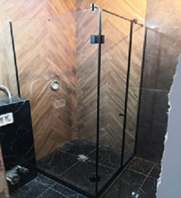
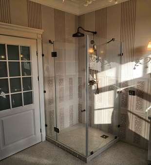
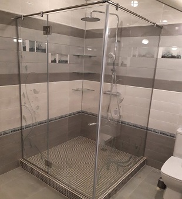
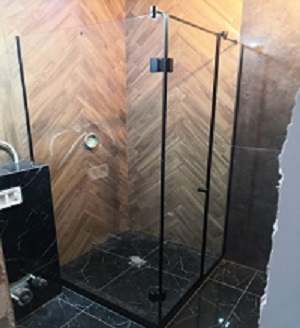
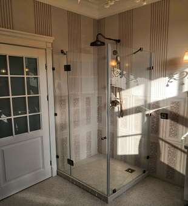
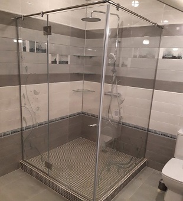

Душевые ограждения и двери на заказ 

Душевые ограждения и двери на заказ 


Стекло - бронза 8мм (AGC, евро) с закалкой; Ручка - скоба; Полосы выполнены путем пескоструйной обработки (матирования) с нанесением лака в 6 слоев с сушкой; Верхняя компенсирующая штанга 30х10 прямоугольная. Вся фурнитура - хромированная.


Стекло - серое 8мм (AGC, евро) с закалкой; Ручка - кноб; На данной душевой предусмотрена система с штангой-петлей, без дополнительных упоров в стену. Так получается сделать редко, поскольку конструкции поддонов не всегда это позволяют. Монтаж к стенам и к бортику выполнен с помощью П-образного профиля.


На фото прямая душевая из осветленного, закаленного стекла 10мм; Ручка - кноб; Тип крепления - коннектора. Петли с доводкой и регулировкой 0 - положения. Бренд комплектующих - Bohle. Отделка фурнитуры - хроом. Штанга - параллельная, квадратная.


Душевая - трапеция из обычного стекла М1, толщиной 8мм. На данном объекте не особо видна зеленца, но при белых стенах будет бросаться в глаза.В то же время, при темных стенах нет смысла переплачивать за “Оптивайт” (осветленное)


На этом объекте были застеклены душевая и сауна. Стекло - 10мм матовое; Хромированная фурнитура ТИТАН (Россия). При выборе матового стекла, всегда нужно учитывать что мы делаем его на основе либо осветленного стекла, либо обычного М1. От этого сильно зависит стоимость и внешний вид изделия. На фото - осветленное, матовое.


 
